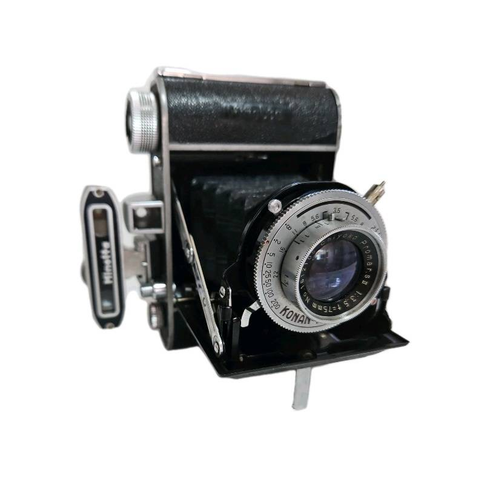
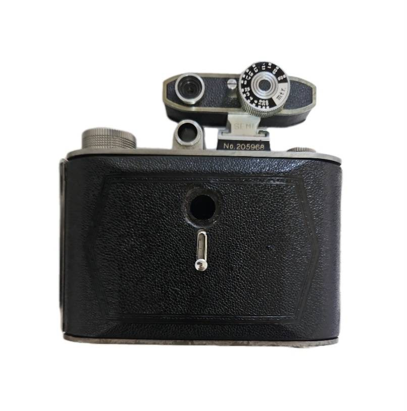
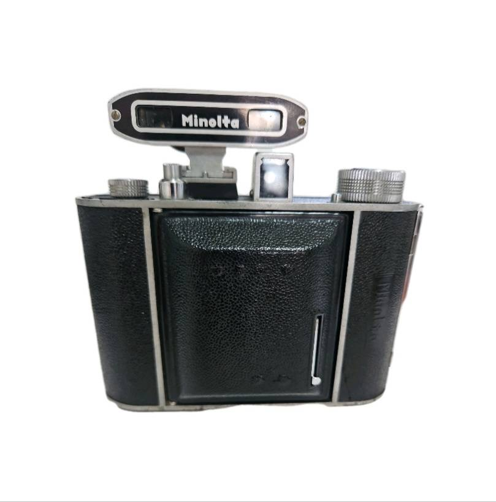
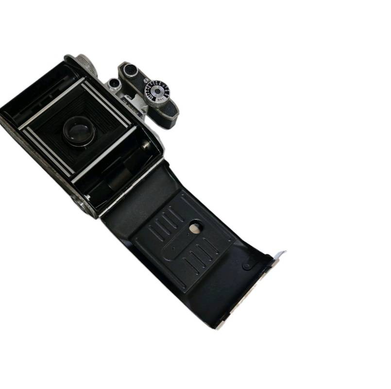
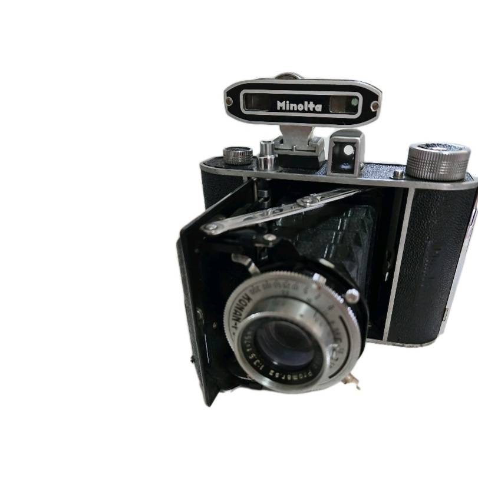
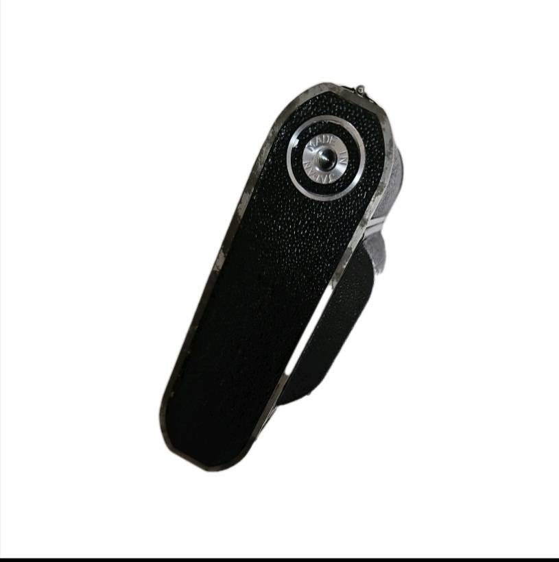

Minolta Semi P Camera






Product Details
Category: Vintage / Antiques
Condition: Excellent - no visible damage
Description: The Minolta Semi P is a vintage medium format folding camera, prized for its compact design and beautiful 6x4.5cm images. Built in the late 1940s, it features a fixed lens and manual controls, offering a fully hands-on shooting experience. Perfect for collectors or film enthusiasts, the Semi P combines classic craftsmanship with the charm of early postwar photography.
Film size:75mm
Price: ¥17,500